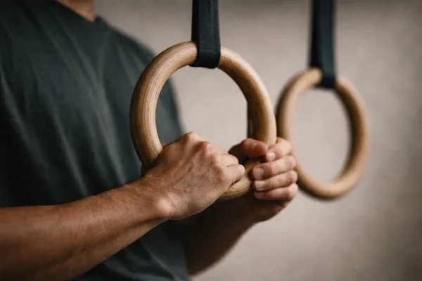
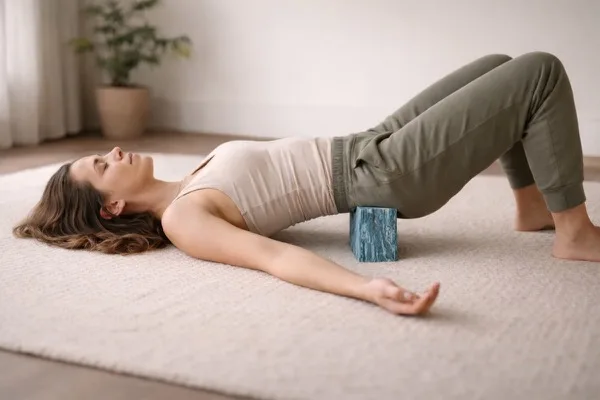
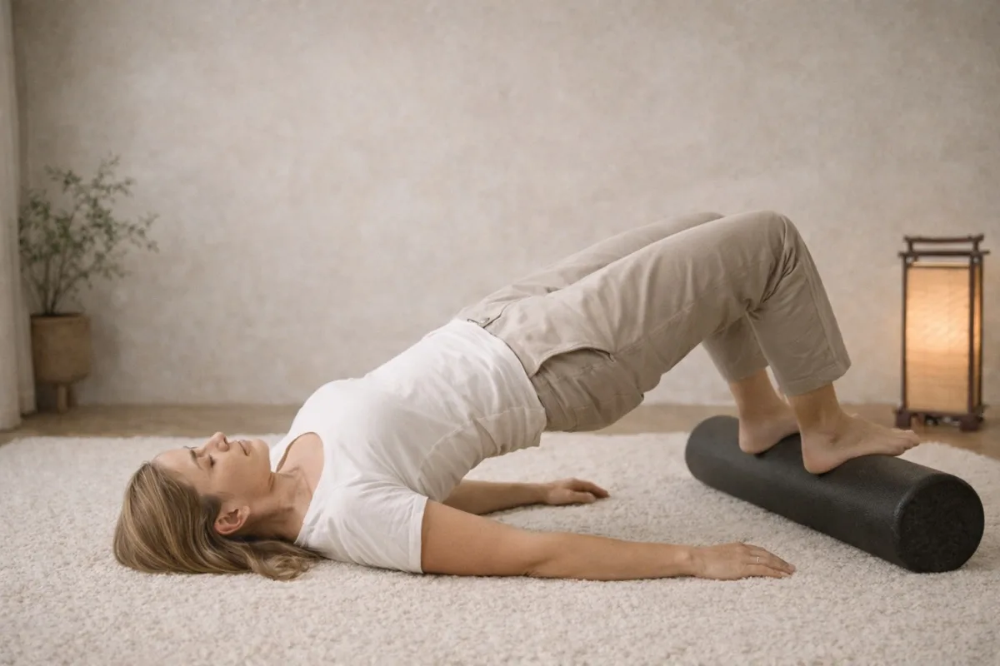

Suspension Squat Hanging Exercises
How hanging exercises awaken your posterior chain through the domino effect. Grip strength cascades through your entire body for complete alignment.
Learn the foundations of the Amari Method. These guides introduce you to the exercises—but true mastery comes through personalized guidance with Dr. Garrett.

Take our 2-minute Body Balance Assessment to reveal the hidden patterns behind your pain that most treatments miss. Get personalized insights and discover your path to relief.

How hanging exercises awaken your posterior chain through the domino effect. Grip strength cascades through your entire body for complete alignment.
Hand muscle imbalance causes carpal tunnel. The hand balancer exercise restores flexor-extensor balance and eliminates compression naturally.
We have a massive over-flexion problem. Your back muscles are working too hard because the front isn't working enough. Power Posture corrects that.
Release spinal compression and shoulder tension with locked-elbow hanging. Vertebrae self-adjust as your spine decompresses naturally.

Release decades of tension and restore spinal mobility with the passive bridge. A moving meditation for tight, restricted bodies.

Build spinal strength and stabilize loose joints with the active bridge. The exact opposite of sitting posture - empowerment through strength.
Float like a wave in the ocean - let gentle movement undo years of sitting compression. A moving meditation for deep hip and low back release.
Hanging for the lower body - eliminate achilles stiffness and plantar fasciitis with gentle calf decompression on a curb. The lymph pump for your ankles.

100% success rate reversing TMJ disorder. Resistance training rebalances jaw muscles, eliminating clicking, pain, and headaches in 2-3 minutes daily.

Resistance rotation rebalances forearm muscles and heals inflamed tendons. 90 seconds twice daily eliminates elbow tendinitis in 30 days.

Gravitate toward what calls to you. Build your own pain relief practice by finding your rhythm with the Amari Method exercises that serve your body right now.

Your back hurts when you sit because sitting compresses your spine, tightens your hip flexors, and weakens the muscles that support you. Here's what's actually happening.
You stretch every day and your back still hurts. That's because stretching treats symptoms, not causes. Here's why it fails and what works instead.
Most sciatica treatments fail because they target symptoms instead of the compression causing them. Here's what actually works for lasting relief.
These exercises work—but only when you understand your body's unique patterns. Dr. Garrett will show you exactly what your body needs, correct your form in real-time, and give you the confidence to maintain relief for life.
Book Your First Session